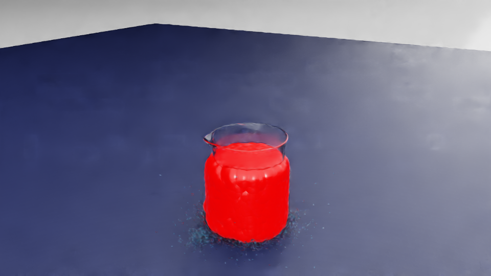
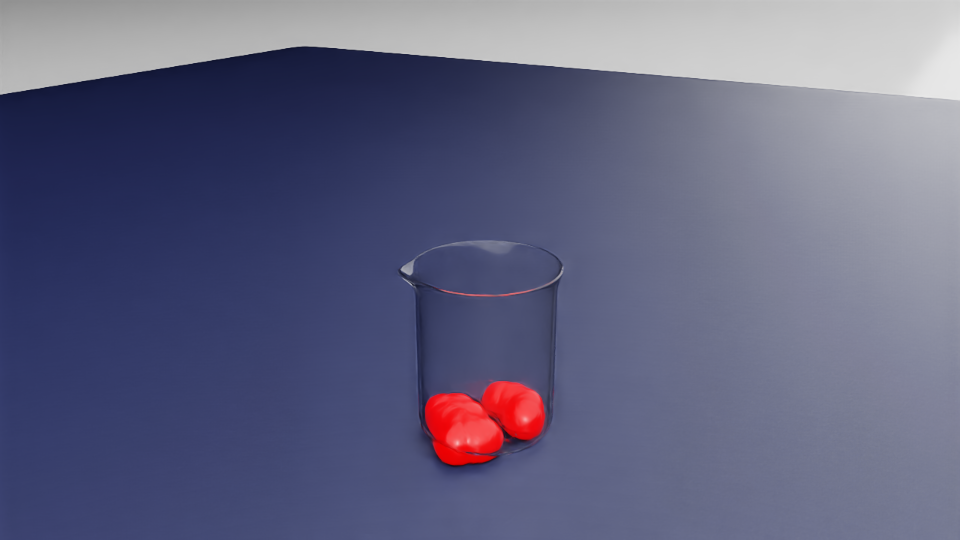
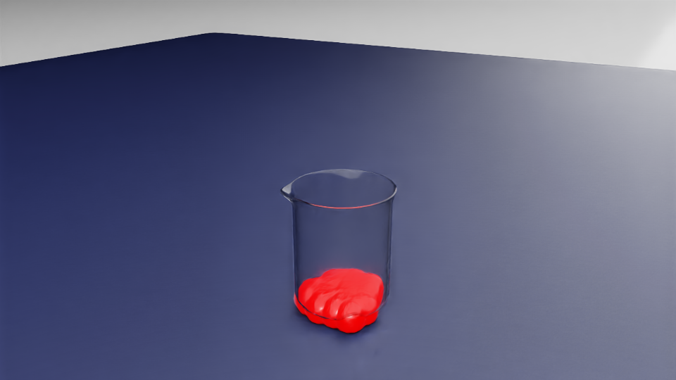

已经证明了什么
目标 IsaacSim41 / EBench 环境里，PhysxParticleSystem、ParticleSet、GPU dynamics 和 particle readback 都能工作。也就是说，底层不是“完全不能做液体”。
这份周报把 7.07 液体线的调研、S0-S2F 碰撞体尝试、同事 50k liquid USD 真实场景实验合并成一个产品可读版本。结论很明确：PhysX/PBD 粒子运行链路能闭合；同事原生 level1_pour 场景能补全成可 step/readback 的 50k PBD 证据；但静置就大规模漏液，所以还不能进入 benchmark-ready 或 EBench score 口径。
FAIL_CONTAINER_LEAK


目标 IsaacSim41 / EBench 环境里，PhysxParticleSystem、ParticleSet、GPU dynamics 和 particle readback 都能工作。也就是说，底层不是“完全不能做液体”。
卡在容器碰撞体。当前 LabUtopia 烧杯 mesh、SDF、segmented proxy、native-derived route 都没有稳定达到 zero-leak。50k native-scene run 的读数说明静置就漏，不是倒液动作太激烈才漏。
不能说 level1_pour 已经有真实液体，不能说同事 raw USD 能直接 step 成 benchmark-ready fluid，不能说已经可以 EBench score，也不能说视频里的红色 blob 等于最终产品级水面效果。
下面这条是主证据：打开同事提供的完整 lab_001_level1_pour_tabletop_with_liquid.usd，保留原生桌面布局和摄像机语境，把 50k 初始点位补成 IsaacSim41 可 step/readback 的 CompletedPBD runtime overlay，然后录 20 秒 closeup。视频负责让人看懂“原生场景里液体随 step 变化”；漏液判定仍以 particle readback 的 region count 为准。
below_table_count=49235。它是原生完整 USD 场景，不是只截一个杯子的最小场景。
它不是 raw USD 直接 step；raw USD 缺完整 PhysxPBDMaterialAPI 等 runtime contract，所以我们把原始 50k 点位当 initial condition，运行时另建 /World/CompletedPBD/ParticleSystem 和 /World/CompletedPBD/ParticleSet。
肉眼 closeup 看不到所有掉到桌下的粒子，所以“漏了多少”不能靠视频猜；数字来自 particle_readback_trace.jsonl。


它对应的是 D0-D3 colleague 50k liquid USD branch，不是已经通过的 S3 kinematic pour，也不是最终 EBench 评测任务。更通俗地说：同事给的是“杯子里摆好了 50k 个液体点位的原生场景包”；我们做的是“把这些点位补成 IsaacSim41 能真正 step/readback 的 PBD 粒子，然后验证静置会不会漏”。
| 阶段 | 做了什么 | 结论 | 产品口径 |
|---|---|---|---|
| D0 raw audit | 只审计 raw USD，不补 PBD material，不加 wrapper collider。 |
raw 文件有 50000 个点，但 runtime contract 不完整。 |
不能说“直接拿同事 USD step 就是可信液体实验”。 |
| B0 512 bounded | 从 50k 点中抽样 512 个，补成 PBD 粒子，先做小样本静置诊断。 |
FAIL_CONTAINER_LEAK，终态 362 个粒子低于桌面线。 |
小样本已经说明当前碰撞路线装不住。 |
| D1-D3 50k | 使用全部 50000 个点，补齐 PBD runtime overlay，录真实 RGB camera。 |
minimal slice 终态 below_table_count=36013。 |
不是抽样问题，原始粒子规模下也会漏。 |
| Native 20s | 打开完整原生入口 USD，使用 50k 点位 + CompletedPBD overlay，录 20 秒 closeup。 |
below_table_count=49235，source_retention_fraction=0.0153。 |
领导能看到原生场景视频；结论仍是当前不 benchmark-ready。 |
source_usd=outputs/usd_asset_packages/lab_001_localized_20260707/lab_001_level1_pour_tabletop_with_liquid.usd source_particle_count=50000 selected_particle_count=50000 runtime_step_executed=true runtime_pbd_completion_overlay_used=true steps=240 video_stride=1 video_fps=12 frame_count=240 duration=20.000000s resolution=960x540 classification=FAIL_CONTAINER_LEAK below_table_count=49235 source_retention_fraction=0.0153 particle_count_final_fraction=1.0 nan_count=0
这条线没有一开始就追求“漂亮倒液视频”，而是按 benchmark 需要的顺序拆问题：先证明环境能跑真实粒子，再证明杯子能不能装住，最后才考虑倒液和评分。当前结果停在“静态持液失败”，所以不能直接放行 S3。
PhysxParticleSystem、PhysxPBDMaterialAPI，并且目标机器有 GPU dynamics 条件。
这里的关键点是：看得见的烧杯和PhysX/PBD粒子真正会撞到的physics collider不是一回事。当前视频里能看到完整原生桌面和烧杯，粒子系统也能 step/readback；但 readback 显示大量粒子穿出容器，说明现在的杯壁/杯底碰撞表达还没有形成一个对液体粒子可靠的“物理杯子”。
所以这不是“同事 USD 里没有液体”，也不是“IsaacSim41 完全不能跑液体”。更准确的结论是：PhysX/PBD运行链路可用，但当前这批collider representation还不是fluid-safe container。
| 尝试方案 | 具体做法 | 结果 | 产品理解 |
|---|---|---|---|
C0 segmented box / wall proxy |
用多个 box 拼出杯壁和杯底。 | FAIL_CONTAINER_LEAK，source retention 约 69.5%。 |
像用几块板围成杯子，缝隙和边界对粒子不够稳。 |
C1 thick-wall open cup proxy |
做一个更厚的简化开口杯形 proxy。 | FAIL_CONTAINER_LEAK，source retention 约 78.1%。 |
加厚有帮助，但仍不是可靠容器。 |
C2 segmented convex wall pieces |
用多块 convex collider 拼成杯壁，是 S2 里最接近成功的一类。 | FAIL_CONTAINER_LEAK，source retention 约 82.8%。 |
方向最有希望，但“接近成功”不能升级成 benchmark-ready。 |
C3 SDF tri-mesh open beaker |
尝试用 SDF tri-mesh 表达杯子的复杂内部形状。 | S2/S2F3 sweep 全部失败，典型结果是粒子掉到桌下。 | 复杂 mesh 看起来像杯子，但当前 SDF route 没能形成稳定内腔。 |
C4 native beaker mesh route |
直接用 LabUtopia 原生 beaker2/mesh 做 convexDecomposition / SDF / native-derived collision。 |
FAIL_NATIVE_CONVEX_INTERIOR_NOT_USABLE，原生 mesh 不能直接当 fluid-safe collider。 |
原生资产适合视觉展示，不等于天然适合真实液体碰撞。 |
C5 analytic/custom cylinder negative control |
用理想化 cylinder / custom container 做对照。 | FAIL_CONTAINER_LEAK，不作为生产路线。 |
用于确认问题边界，不是最终解决方案。 |
S2F1继续调 C2 的 panel count、wall thickness、bottom overlap、contact offset；S2F2隔离测试 initial velocity、CCD、particle/collider offset；S2F5再做多 seed、多粒子数 promotion review。结论是：单次 256 粒子 near-pass 不稳定，1024 粒子会明显退化，所以不能放行 S3。
同事给的 50k 粒子 USD 经过 CompletedPBD overlay 后确实能 step/readback，但终态 below_table_count=49235。这说明问题不是“没跑起来”，而是当前 native/proxy collider route 装不住原始粒子规模的液体。
接下来应该保留原生烧杯做视觉展示，同时给液体单独配一套更保守、更厚、更闭合、GPU-compatible的 invisible fluid-safe wrapper collider。只有静置 zero-leak 在多粒子数、多 seed 下通过后，倒液视频和 EBench metric 才有评测意义。
这不是粒子物理尺寸真的很大。当前运行使用的实际粒子宽度约 0.000594m，也就是 0.594mm。但 50k 粒子非常密集，camera render 里会叠成红色团块；review marker 版本还会把 readback 点位放大到约 0.012m 方便人看，所以 marker 视频更不能当真实水面材质。
后续如果做产品级视觉，需要在物理粒子之外再接 Isosurface / Smoothing / Anisotropy 一类渲染层，把点云变成连续液面。但那是 visual closure，不会替代 zero-leak 物理 gate。
早期原生场景出现过红色异常，主要是 MDL runtime compile / import 兼容问题，不是液体本身的结论。现在使用 isaacsim41_core_mdl_local_mirror：把 IsaacSim41 官方 core MDL 依赖复制到证据目录，并把 native shader 指向这套本地 mirror。
当前 mdl_compile_status=PASS，所以可以说“这条 native-scene 证据没有明显 solid red fallback”。但仍不能说它已经达到 LabUtopia51 native visual material parity，因为部分玻璃材质为了 IsaacSim41 兼容做了 OmniSurface_Glass -> OmniGlass fallback。
最早的漏液视频更像工程诊断：有些是 minimal native beaker slice，有些是 projection，不是完整原生桌面场景。因此它们能证明“readback 统计显示漏”，但不适合回答“是不是同事给的那个 USD 场景”。这次 20 秒 native-scene 证据补强了这个问题：入口文件就是同事提供的 lab_001_level1_pour_tabletop_with_liquid.usd，画面里是完整原生布局，材质也做了 IsaacSim41 local mirror closure。
从“最小切片会漏”提升到“同事完整原生 USD 场景中，50k 点位补成 PBD 后也会漏”。这更接近领导要看的问题，但结论仍是失败证据，不是验收成功。
接下来不要一味重录视频，也不要直接进入机械臂倒液。正确顺序是先把静态持液 gate 做过，再进入动作和评分。
| 阶段 | 要解决的问题 | 通过标准 | 为什么排在这里 |
|---|---|---|---|
| D4 wrapper design | 设计 fluid-safe wrapper collider：视觉仍看原生烧杯，物理碰撞用更可控的厚壁/底部/分段 proxy。 |
静置场景里 below_table=0、spill=0、outside_source=0。 |
现在的核心 blocker 是容器装不住，不是相机或材质。 |
| D4 promotion | 用 512 / 1024 / 4096 / 50k 粒子数、多 seed、多 reset 做复核。 | 不能只靠单次 256 粒子通过；必须稳定 zero-leak。 | S2F2 的 near-pass 已经证明“单次通过”会误导。 |
| S3 slow pour | 让 source beaker 做慢速 kinematic tilt，看液体能否从 source 流向 target。 | source 到 target 的 region count 合理变化，无桌下漏穿，无 CPU fallback。 | 静置都装不住时，倒液视频没有 benchmark 意义。 |
| EBench consumer | 把 fluid scene 接进 EBench consumer，验证加载、step、readback 和 metric。 | headless 可复现，metric 能解释得分，失败能归因。 | 产品级目标不是“看起来有水”，而是能评测。 |
native_usd_scene_step_video_recorded=true50k_colleague_particles_stepped_in_native_scene=trueleak_status_supported_by_particle_readback=truemdl_compile_status=PASS，没有明显 solid red fallback。raw_50k_colleague_liquid_usd_can_direct_step_as_true_pbd_fluidcompleted_pbd_static_leak_equals_benchmark_ready_fluidlevel1_pour_true_fluid_runtime_passeds3_kinematic_pour_releasedebench_score_or_policy_claim_allowedhandoff=../../docs/labutopia_lab_poc/true_physx_pbd_fluid_spike.md source_usd=../../outputs/usd_asset_packages/lab_001_localized_20260707/lab_001_level1_pour_tabletop_with_liquid.usd long_native_manifest=../../docs/labutopia_lab_poc/evidence_manifests/fluid_spike_colleague_native_usd_50k_completed_pbd_step_video_long_20260708.json long_visual_review=../../docs/labutopia_lab_poc/evidence_manifests/fluid_spike_colleague_native_usd_50k_completed_pbd_step_video_long_visual_review_20260708.json minimal_50k_manifest=../../docs/labutopia_lab_poc/evidence_manifests/fluid_spike_colleague_50k_completed_pbd_static_leak_20260708.json bounded_512_manifest=../../docs/labutopia_lab_poc/evidence_manifests/fluid_spike_colleague_liquid_usd_leak_smoke_20260708.json s2_collider_matrix=../../docs/labutopia_lab_poc/evidence_manifests/fluid_spike_s2_collider_matrix_20260707.json s2f5_promotion=../../docs/labutopia_lab_poc/evidence_manifests/fluid_spike_s2f5_promotion_review_20260708.json
周报日期按 2026-07-07 归档；页面证据更新到 2026-07-08 的 20 秒 native-scene visual review。中文用于解释性叙述，英文保留 USD、IsaacSim41、PhysX/PBD、ParticleSet、EBench、MDL 等架构术语。